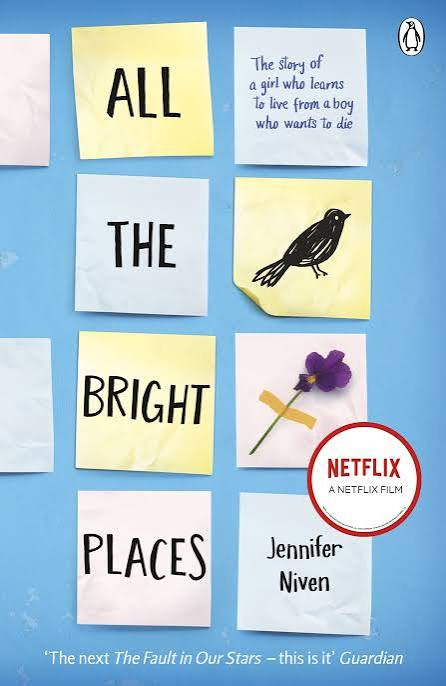

BLUE SISTERS
Coco Mellors

ALL THE BRIGHT PLACES
Jennifer Niven

BEFORE THE COFFEE GETS COLD
Toshikazu Kawaguchi
other books like it
if you loved when the world tips over, you might enjoy these
FAMILY · EMOTIONAL · LYRICAL
BLUE SISTERS
Coco Mellors

ALL THE BRIGHT PLACES
Jennifer Niven
BEFORE THE COFFEE GETS COLD
Toshikazu Kawaguchi